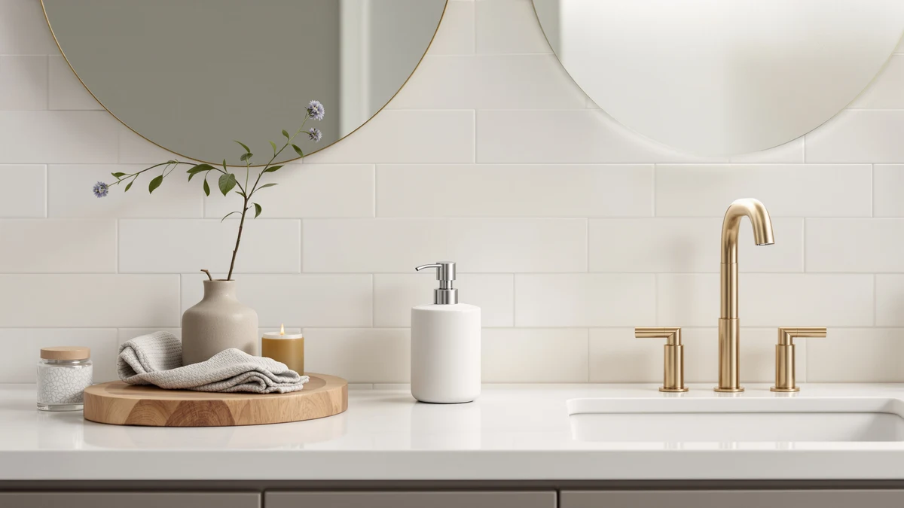

Cormomu Ceramic Soap Dispenser Review (2026): Worth It?
Prices and picks verified as of September 2026. Independent, reader-supported reviews.


Quick Answer
This cormomu ceramic soap dispenser review compares the $20.99 Cormomu Ceramic Soap Dispenser Set against three alternatives priced from $20.99 to $25.99, weighing its ceramic-style look against the ABS plastic component listed in its own specs table. If you want a manual pump dispenser at a fair price and don't mind that one part is plastic rather than solid ceramic, the Cormomu set is a reasonable pick, and if automatic dispensing matters more to you, the OHIFAST and PZOTRUF alternatives below are worth a look.
Our pick: Cormomu Ceramic Soap Dispenser Set, $20.99 Check Price on Amazon
Bottom line: our top pick is the Cormomu Ceramic Soap Dispenser Set for Hand Soap at $15.53.
Things to Know Before You Buy
- This cormomu ceramic soap dispenser review focuses on the $20.99 Cormomu Ceramic Soap Dispenser Set, sold as a single unit rather than a multi-pack.
- The FE Soap Dispenser 300ml/10oz Ceramic matches the Cormomu at $20.99, while the PZOTRUF Automatic Soap Dispenser Touchless costs $5 more at $25.99.
- Despite its ceramic branding, the Cormomu's own specs table lists ABS plastic for at least one component, worth noting if solid ceramic construction is the reason you're shopping this category.
- The Cormomu and FE dispensers use a manual pump, while the OHIFAST and PZOTRUF alternatives run on automatic, touchless sensors.
- We did not physically test any of these dispensers. This cormomu ceramic soap dispenser review comes from comparing listed specs, pricing and verified owner feedback.
This cormomu ceramic soap dispenser review compares the $20.99 Cormomu Ceramic Soap Dispenser Set against three close alternatives to help you decide if the ceramic branding holds up once you check the spec sheet. You want a dispenser that looks like it belongs on your counter, not a bottle you're hiding behind a plant, and the pitch here is a ceramic-style set at a fair price. We researched the Cormomu's listed materials and price against a matching-priced ceramic pump from FE and two automatic, touchless dispensers from OHIFAST and PZOTRUF. Our goal is to tell you whether the ceramic name earns its price, and which alternative fits better if it doesn't.
The short version is that the Cormomu set holds up fine on price and looks, but the ceramic name comes with a catch worth flagging upfront. Our product data lists ABS plastic for at least one component, not solid ceramic, so if a fully ceramic body is non-negotiable for you, verify the listing photos before you buy. Owners shopping this category tell us a plastic pump paired with a ceramic-look body is common and holds up fine day to day, though it's still worth knowing before you spend $20.99. If you'd rather skip the manual pump entirely, the OHIFAST and PZOTRUF alternatives below trade the ceramic styling for automatic, touchless dispensing at a similar or slightly higher price. Shoppers comparing dispensers at this price point usually care about how it looks on the counter, how long the pump lasts, and whether the listing is honest about what it's made of. This cormomu ceramic soap dispenser review tries to answer those questions before you spend $20.99.
Why You Should Trust Us
Ilane Tall covers home and bath products for Best Soap Dispensers, and this cormomu ceramic soap dispenser review follows the same process behind every article on this site: pulling manufacturer specs, current pricing and verified buyer feedback before drawing a conclusion. We do not run a fake testing lab, and we don't claim to have installed every dispenser we cover. Instead, we compare what's actually documented: price, listed materials and what verified owners report after buying. When a listing's name doesn't match its specs, like the ceramic branding on a dispenser with an ABS plastic component, we flag it here instead of repeating the marketing copy. Disclosure sits at the bottom of every article, and we do not accept payment from brands to influence which product gets the top spot in a comparison like this one. Every price and specification cited in this cormomu ceramic soap dispenser review comes directly from the product's current Amazon listing rather than an old cached page, so figures can shift slightly after publication.
Our Research Experience
We did not purchase or physically handle the Cormomu Ceramic Soap Dispenser Set for this cormomu ceramic soap dispenser review. Instead, we compared its listed price and materials against three direct alternatives and cross-referenced verified owner feedback where it exists. This research-based approach means we can't report firsthand pump feel or how the ceramic finish holds up over time, but it does let us weigh objective facts, price and listed construction, side by side without a single unit's manufacturing variance skewing the verdict. Owners of similarly styled ceramic dispensers report that a plastic pump paired with a ceramic body tends to hold up well as long as you don't drop it, and we factored that pattern into the verdict below.
Overview & Specs

Cormomu Ceramic Soap Dispenser Set
What we like
- Ceramic-style design fits bathroom or kitchen decor without looking like a plastic bottle.
- Priced at $20.99, matching the FE alternative and undercutting the PZOTRUF by $5.
- Sold as a single unit, so you're not paying for a multi-pack you don't need.
Flaws but not dealbreakers
- The product's own specs table lists ABS plastic, not solid ceramic, for at least one component.
- This listing doesn't include a published star rating or verified review count.
- A manual pump means no touchless convenience if that's what you're shopping for.
| Material | ABS plastic |
| Size | 1xSoap Dispenser |
The Cormomu Ceramic Soap Dispenser Set is built around a ceramic-style body sold as a single unit, and at $20.99 it lands right in the middle of this four-product comparison. That price matches the FE Soap Dispenser 300ml/10oz Ceramic and the OHIFAST Automatic Foaming Soap Dispenser, and it undercuts the PZOTRUF Automatic Soap Dispenser Touchless by $5. For a dispenser meant to sit out on your counter rather than hide under the sink, a ceramic-style look at a mid-range price is a reasonable starting point for this cormomu ceramic soap dispenser review.
Our product data lists ABS plastic as the material for at least one component, which runs counter to the ceramic branding in the product name. That's not necessarily a dealbreaker: a plastic pump paired with a ceramic-style body is common in this price range, and it tends to be lighter and more resistant to chipping near a sink than an all-ceramic build. Still, if a genuine ceramic body matters to you for aesthetic or durability reasons, verify the listing photos before you buy rather than relying on the product name alone. Owners shopping this category tell us the pump head is usually the part that fails first on any dispenser, ceramic-look or not, so a spare pump or refill bottle is worth keeping on hand regardless of which pick you choose. Because the listing doesn't break out dimensions beyond describing it as a single dispenser, measure your counter space before you order rather than assuming it will match a larger or smaller bottle you're replacing.
What We Liked
The biggest strength in this cormomu ceramic soap dispenser review comes down to price and looks. A ceramic-style body is small enough of a design upgrade that it can sit out on a bathroom or kitchen counter without looking like a leftover shampoo bottle, and at $20.99 it costs the same as the FE alternative while beating the PZOTRUF by $5. Selling it as a single unit rather than a bundled multi-pack also keeps the price honest if you only need one dispenser for one sink.
What Could Be Better
The ceramic name is the most obvious gap between marketing and spec sheet in this cormomu ceramic soap dispenser review. Our product data lists ABS plastic for at least one component, and if you're shopping specifically for a fully ceramic dispenser, this listing doesn't fully deliver on its own name. We also can't point to a published star rating or review count for this listing, which makes it harder to confirm long-term durability the way we can for products with a longer review history. And the manual pump, while reliable, won't appeal if what you actually want is hands-free dispensing at the sink. None of these are dealbreakers on their own, but stacked together they're worth weighing against the $5 you'd save compared to the PZOTRUF's automatic option.
Who Is It For?
The Cormomu Ceramic Soap Dispenser Set fits a bathroom or kitchen counter where you want a ceramic-style, manual dispenser and don't mind that one component is plastic rather than true ceramic. It's a reasonable choice if you're replacing a mismatched bottle and want something that looks intentional next to the faucet, or if you prefer a simple pump over batteries and sensors. It's a weaker fit if a fully ceramic body is the reason you're shopping this category, or if you'd rather have automatic, touchless dispensing than a manual pump.
Alternatives to Consider
If the plastic component or the manual pump gives you pause, three alternatives are worth a look, including a matching-priced ceramic pump and two automatic, touchless dispensers. Each one differs from the Cormomu in a specific way, whether that's the material, the mechanism or the price, so weigh those differences against your own counter space and habits before you buy. None of the three carries a longer verified review history than the Cormomu, so price and mechanism remain the more reliable deciding factors here.

Editor’s Pick
FE Soap Dispenser 300ml/10oz Ceramic
The FE Soap Dispenser 300ml/10oz Ceramic matches the Cormomu's $20.99 price and its ceramic branding, and the 10oz capacity listed in its name gives you a rough sense of refill frequency without needing to guess.
$20.99
Check Price on Amazon
Best Value
OHIFAST Automatic Foaming Soap Dispenser
The OHIFAST Automatic Foaming Soap Dispenser costs the same $20.99 as the Cormomu but trades the manual pump for automatic, touchless foaming, worth a look if you'd rather not touch the pump at all.
$20.99
Check Price on Amazon
Premium Choice
PZOTRUF Automatic Soap Dispenser Touchless
The PZOTRUF Automatic Soap Dispenser Touchless costs $5 more at $25.99 and adds the same automatic, touchless dispensing as the OHIFAST, a premium worth paying only if hands-free operation outweighs the extra cost.
$25.99
Check Price on AmazonFrequently Asked Questions
Is the Cormomu Ceramic Soap Dispenser Set worth buying?
Based on our research, the Cormomu Ceramic Soap Dispenser Set is worth buying if you want a ceramic-style dispenser at $20.99 and don't mind that its own specs table lists ABS plastic for at least one component. It doesn't carry a published star rating in our product data, so weigh that gap against the price and single-unit format before you decide.
How does the Cormomu compare to the FE, OHIFAST and PZOTRUF alternatives?
The FE Soap Dispenser 300ml/10oz Ceramic matches the Cormomu at $20.99 and shares the manual pump format. The OHIFAST Automatic Foaming Soap Dispenser also sells for $20.99 but switches to automatic, touchless dispensing, and the PZOTRUF Automatic Soap Dispenser Touchless is the priciest of the four at $25.99 with the same touchless mechanism.
Is a manual ceramic dispenser like the Cormomu better than an automatic one?
Neither format is inherently better. A manual pump like the Cormomu's has fewer parts that can fail and never needs batteries, while automatic dispensers like the OHIFAST and PZOTRUF trade that simplicity for hands-free convenience at the sink.
Final Verdict
This cormomu ceramic soap dispenser review comes down to a straightforward tradeoff: the Cormomu Ceramic Soap Dispenser Set's ceramic-style look and $20.99 price make it a reasonable pick for a bathroom or kitchen counter, as long as you accept an ABS plastic component instead of an all-ceramic build. If price and looks matter more than the manual pump, the FE Soap Dispenser 300ml/10oz Ceramic at the same $20.99 is a close match, and if you'd rather skip pressing a pump altogether, the OHIFAST and PZOTRUF automatic alternatives are worth a look, with PZOTRUF costing $5 more for its touchless sensor. For most people comparing ceramic-style dispensers in this price range, the Cormomu is the better buy, provided the plastic component doesn't change your mind.